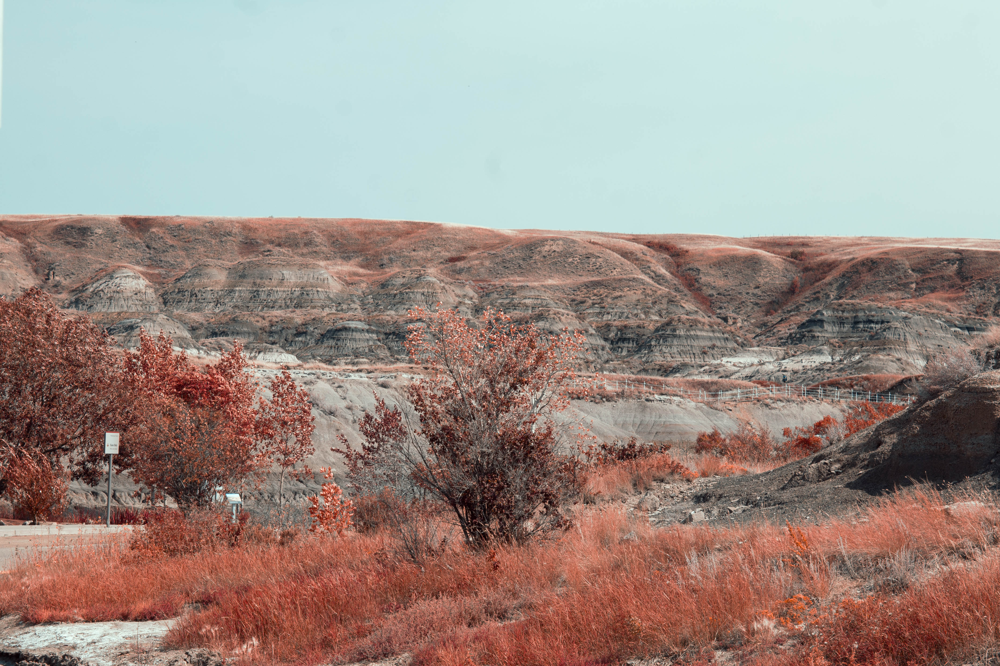
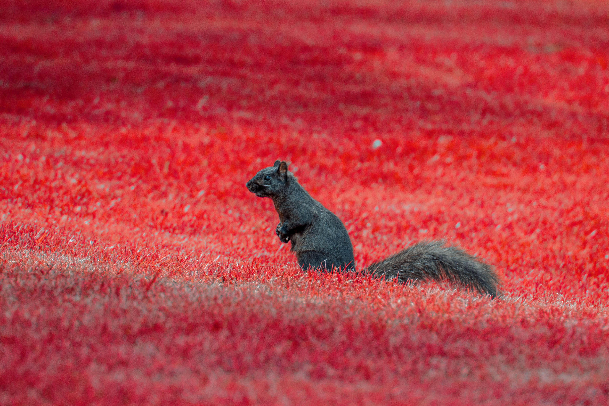
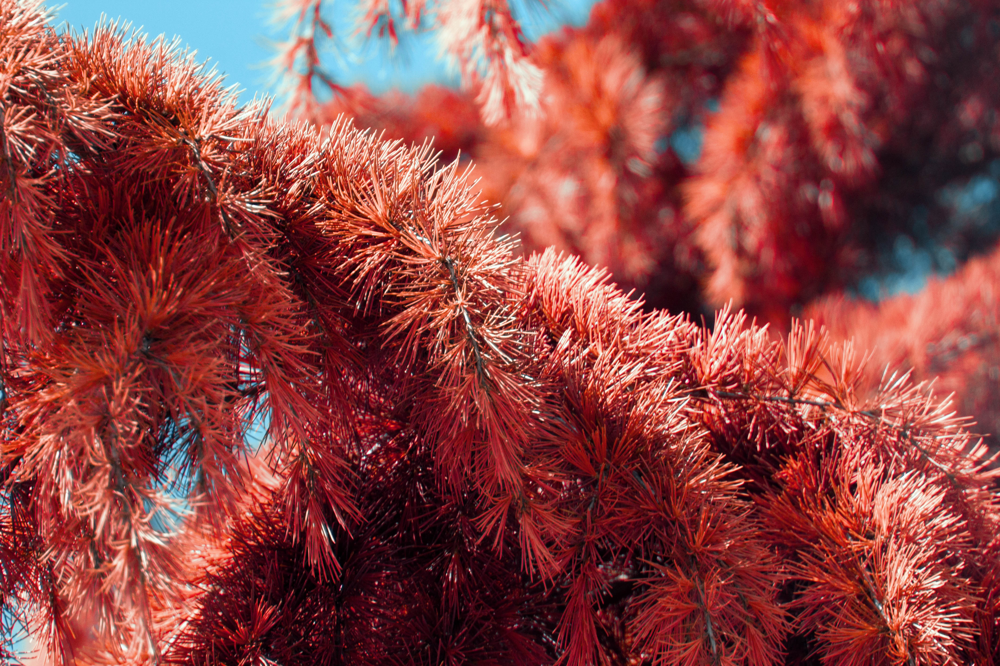

Red by Jayden Quilay. Taken in Drumheller, Alberta.
This work is taken beside the Royal Tyrrell Museum. It features the Midland Provincial Park Hills (if you'd call it that) in the distance.
51°28'46.7"N 112°47'20.3"W
Road Unnamed

Squirrel by Jayden Quilay. Taken in Surrey, British Columbia.
This photo was taken with the new lens I aquired at the time, which is the Canon 75-300mm I mentioned in the Main section of this website. The squirrel was coincidentially there and I took the perfect opportunity to take a test photo of an animal at a far distance.
49°07'01.8"N 122°49'18.6"W (Roughly)
Road Unnamed

Pine by Jayden Quilay. Taken in Surrey, British Columbia.
"Pine," was also another test shot, and converted to Inrafred, along with "Squirrel." This time, it features a pine tree's branches.
49°07'09.1"N 122°49'21.6"W
64 Ave
More Infrared material will be published. For now, I have 3 works up.